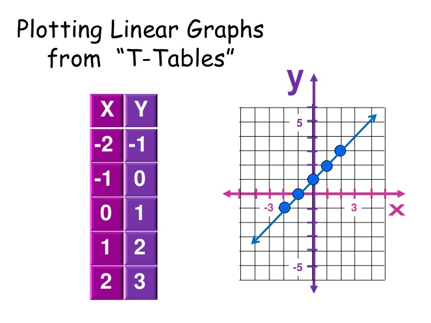
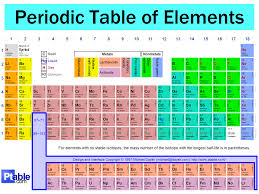

Publishing tables are used so you can use it to compose a complete marketing communication without having to create files in Word and import them into your Publisher document.
Mathematical tables are lists of numbers showing the results of calculation with varying arguments.

The periodic table is a tabular arrangement of the chemical elements, ordered by their atomic number (number of protons), electron configurations, and recurring chemical properties. This ordering shows periodic trends, such as elements with similar behaviour in the same column.

A relational database is made up of several components, of which the table is most significant. The database table is where all the data in a database is stored, and without tables, there would not be much use for relational databases.

Modern software applications give users the ability to generate, format, and edit tables and tabular data for a wide variety of uses, for example: word processing applications; spreadsheet applications; presentation software; tables specified in HTML or another markup language.
.jpg)